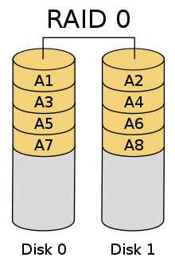
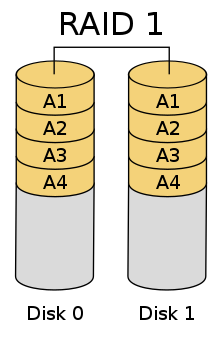
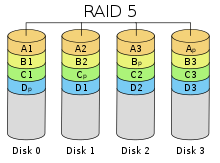
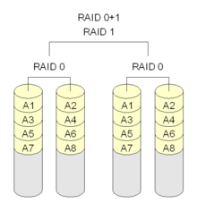

Ágazati Vizsga Elmélet
Fizika:
- Soros Kapcsolás
- R1+R2 = Eredő ellenállás
- Párhuzamos Kapcsolás
- 1/R1+1/R2
Windows eszközök szerepe:
- Eszközkezelő
- Ha valaha beléptél, látni fogod, hogy találunk benne egy listát, amelyben szerepelnek az összes hardverkomponens, amelyet csatlakoztattunk a számítógépre. Mindegyik kategóriákba van csoportosítva, hogy egyszerű módon megkereshessük őket. Ezeknek az eszközöknek az adatait is megtekinthetjük, ha mindegyikre kattintunk.
- Számítógép-kezelés
- Ezen keresztül bármit elérek a számítógépemmel kapcsolatban
- Feladatütemező
- A feladatütemezés-szerkesztő konfigurálja a feladatütemezés lépéseit. A feladatütemezés tulajdonságai között további beállítások érhetők el, amelyek a feladatütemezés futtatásának és viselkedésének egyéb aspektusait szabályozzák.
- Windows Defender
- A Windows 10 és 11 a Windows biztonsággal a legfrissebb vírusok elleni védelmet nyújtja. A Windows elindításának pillanatától kezdve az eszköz aktív védelme biztosított. A Windows biztonság folyamatosan átvizsgálja az eszközt, kártevők (kártevő szoftverek), vírusok és biztonsági fenyegetések után kutatva. A valós idejű védelem mellett a frissítések letöltése automatikus, ami szintén hozzájárul eszköze biztonságához és fenyegetésektől való védelméhez.
- Lemezkezelő
- A Windows Lemezkezelés segít a speciális tárolási feladatok elvégzésében, ilyen például az új meghajtó inicializálása, illetve a kötetek kiterjesztése vagy zsugorítása.
- Új meghajtó inicializálása
- Alapkötet kiterjesztése
- Alapkötet összecsukása
- Meghajtóbetűjel módosítása
- Lemezkezelás hibaelhárítás
- Lemez karbantartó
- Ha megnyitjuk kikell választani melyik lemezen szeretnénk végezni a törlést és utána megnyílik egy kis ablak ahol kitudjuk választani mely fájlokat törlje ki. (legtöbb esetben ez nem fontos dokumentum)
- Eseménynapló
- Alkalmazás:
- Az Alkalmazásnapló regisztrálja a Windows rendszerösszetevőkkel kapcsolatos eseményeket, például a meghajtókat és a beépített interfészelemeket.
- Rendszer:
- A rendszernapló rögzíti a rendszerre telepített programokhoz kapcsolódó eseményeket.
- Biztonság:
- Ha a biztonsági naplózás engedélyezve van (ez alapértelmezés szerint ki van kapcsolva a Windows rendszerben), ez a napló rögzíti a biztonsággal kapcsolatos eseményeket, például bejelentkezési kísérleteket és erőforrás-hozzáférést.
Lemez Partíció
- Partíció
- A partíció a merevlemez egy önálló logikai egysége, amely fájlrendszer tárolására alkalmas. Ahhoz, hogy egy merevlemezt használni tudjunk, annak általában legalább egy formázott (azaz fájlrendszert tartalmazó) partíciót kell tartalmaznia.
- Elsődleges partíció
- A fő rendszertöltő rekordban lévő fő partíciós táblában elhelyezkedő partíciók. Egyes operációs rendszerek igénylik, hogy első (rendszer-) partíciójuk elsődleges legyen, ilyenek például az MS-DOS, Windows és a Minix. A merevlemezen legfeljebb 4 elsődleges partíció lehet.
- Aktív partíció
- Rendszerindításra kijelölt partíció.
- Kiterjesztett (extended) partíció
- A kiterjesztett partíció egy olyan elsődleges partíció, amely nem fájlrendszert, hanem egy második partíciós táblát tartalmaz, így lehetővé válik több partíció használata.
- Az első partíciós táblában egyetlen kiterjesztett partíció lehet, a többinek elsődlegesnek kell lennie.
- Logikai kötet
- A kötet egy logikai interfészre vonatkozik, amit az operációs rendszer valamilyen adathordozón tárolt adatokhoz való hozzáférésnél használ, és a fájlrendszer számára egy területként jelentkezik.
Fájlrendszerek
- NTFS (New Technology File System)
- Microsoft legmegbízhatóbb és leggyakrabban használt fájlrendszere.
- NTFS-rendszerekben a rendszer automatikusan naplóba vezeti a fájlműveletek közben megnyitott állományokat. Ha a fájlművelet során a gép lefagy, akkor a bootolás közben már a rendszer képes megállapítani az említett naplófájlok segítségével, hogy történt-e adatvesztés.
- Az NTFS egyik hátránya, hogy alapértelmezetten nem rendelkezik fájltitkosítási szolgáltatással, így egy más alapú rendszerindításkor simán bele lehet tekinteni az NTFS-adatokba.
- FAT32 (File Allocation Table)
- A maximális fájlméret a FAT32-en 4 294 967 295 bájt.
- A könyvtárak legfeljebb 65 535 fájlt és más könyvtárat tartalmazhatnak.
- A FAT könyvtárakat nem rendezik vagy indexelik. Ez csökkenti a hatékonyságot számos olyan műveletnél, mint például új fájlok létrehozása, amikor a könyvtár mérete megnő.
Összehasónlítási tábla:
| Összehasónlítás alapja | FAT32 | NTFS |
|---|---|---|
| Alapvető | Egyszerű felépítés | Összetett szerkezet |
| A fájlnévben támogatott karakterek maximális száma | 83 | 255 |
| Maximális fájlméret | 4GB | 16TB |
| Titkosítás | Nem biztosított | Biztosítani |
| Biztonság | Hálózat típusa | Helyi és hálózati |
| Átalakítás | Megengedett | Nem megengedett |
| Hibatűrés | A hibatűrésre nincs előírás | Automatikus hibaelhárítás |
| Hozzáférés-ellenőrzési lista | Nem | Igen |
| Felhasználói szintű lemezterület | Nem | Igen |
| Naplózás és csatornanapló | Hiányzik | Naplózási lehetőséget kínál a korábbi műveletek nyomon követésére |
| Teljesítmény | Jó | Jobb, mint a FAT32 |
| Hozzáférési sebesség | Kevésbé viszonylag | Több |
| Tömörítés | Tömörítés nem biztosított | Támogatja a fájlok tömörítését |
Windows indítási módok, karbanartási lehetőségek.
- Csökkentett mód
- Csökkentett üzemmódban a Windows alapállapotban, korlátozott számú fájl és illesztőprogram használatával indul el.
- Ha a probléma nem biztonságos módban jelentkezik, az azt jelenti, hogy az alapértelmezett beállítások és az alapvető eszközillesztők nem okozzák a problémát.
- A Windows csökkentett módban való megfigyelésével leszűkítheti a probléma forrását, és segíthet a számítógéppel kapcsolatos problémák elhárításában.
- Rendszer Visszaállítási pont
- Egy visszaállítási pont, amelyet rendszer-visszaállítási pontnak neveznek, a rendszer-visszaállítás által egy adott napon és időpontban tárolt fontos rendszerfájlok gyűjteményének a neve.
- A Rendszer-visszaállításban végzett műveletek visszaállnak egy mentett visszaállítási pontra. A folyamatban lévő utasításokat a Rendszer-visszaállítás Windows rendszeren című szakaszában találja meg .
- A legutolsó helyes konfiguráció indítása
- Az Utolsó jól ismert konfiguráció fontos rendszereket és rendszerleíró adatokat tárol minden alkalommal, amikor kikapcsolja a számítógépet és a Windows sikeresen leáll.
- a probléma merül fel, akkor újraindíthatja a számítógépet ezekkel a beállításokkal.
- Ha például a videokártya új illesztőprogramja problémákat okoz, vagy ha egy helytelen regisztrációs beállítás megakadályozza a Windows helyes indítását, újraindíthatja a számítógépet az Utolsó ismert konfiguráció használatával.
- Helyreállítási konzol
- A helyreállítási konzol lehetővé teszi a Cloud szerverek egyszerű kezelését a Control Panel grafikus felhasználói felületének használatával.
- virtuális gép újraindítása.
- közvetlenül a böngészőben elérhető felhasználói felületről történő csatlakozás.
- a virtuális gép és a benne konfigurált eszközök állapotának kezelése és nyomon követése.
- RAID 0 (összefűzés vagy csíkozás)
- A RAID 0 az egyes lemezek egyszerű összefűzését jelenti, viszont semmilyen redundanciát nem ad, így nem biztosít hibatűrést, azaz egyetlen meghajtó meghibásodása az egész tömb hibáját okozza.

RAID 0 működése
- RAID 1 (tükrözés)
- Két meghajtót használ fel és ugyan azt az adatot menti mind kettőre ezáltal a biztonság sokkal nagyobb lesz. (Viszont a kapacítás is csökken)

RAID 1 működése
- RAID 5
- Minimális meghajtók 3. (Ajánlott 4)
- Az információt nem egy kitüntetett meghajtón, hanem „körbeforgó paritás” használatával, egyenletesen az összes meghajtón elosztva tárolja.
- Egy meghajtó meghibásodása esetén az adatok sértetlenül visszaolvashatóak, a hibás meghajtó adatait a vezérlő a többi meghajtóról ki tudja számolni.

RAID 5 működése
- RAID 10
- A lemezeket először tükrözzük, majd a kapott tömböket összefűzzük
- 4 meghajtót igényel
- Négy meghajtós konfigurációban, két tükrös meghajtó tárolja a csíkos adatok felét, másik kettő pedig az adatok másik felét.

RAID 10 (1+0) működése
- RAID 01
- RAID 0 által hordozott sebességet a RAID 1-et jellemző biztonsággal ötvözhetjük.
- Minimálisan 4 eszközre van szükségünk, melyekből 1-1-et összefűzve, majd páronként tükrözve építhetjük fel a tömbünket

RAID 01 (0+1) működése
Memória Típusuok
- RAM (véletlen-, vagy közvetlen hozzáférésű memória)
- A RAM célja, hogy aktív, nagy sebességű memóriában tartsa mindazt, amit a processzor éppen futtat.
- Minél közelebb van a memória a processzormaghoz, annál gyorsabb.
- Meghatározó tulajdonsága a "latency", avagy késleltetés. Bár kissé megtévesztőnek hangozhat, telekommunikáció esetén a késleltetés a válaszidő szinonimájaként funkcionál, tehát nem szándékosan késleltetésre, inkább a reakcióidőre érdemes gondolnunk.
- A RAM-on az operációs rendszer, az alkalmazások, a gyakran használt adatok vannak tárolva annak érdekében, hogy a processzor minél gyorsabban elérhesse azokat.
- A RAM csak addig őrzi meg az adatokat, amíg a számítógép be van kapcsolva
- ROM
- Csak olvasható adatok tárolására alkalmas memória.
- Tartalma nem változtatható, az egyszer beégetett adatok véglegesek.
- Az eszköz a benne tárolt adatokat típustól függően, korlátlan vagy korlátozott ideig (általában 20 év) áramtalanított állapotban is megőrzi.
- PROM
- Programozható ROM.
- Egyszer írható memória típus.
- Az írás során speciális belső kapcsolatokat éget át a készülék, amely kapcsolat már nem állítható helyre.
- EPROM
- Törölhető és programozható ROM
- A memóriába írt tartalom ultraibolya (UV) fénnyel törölhető, majd a memória újraírható.
- EEPROM
- Elektromosan törölhető ROM
- Az írási és törlési művelethez már nem kell a memóriát kiépíteni.
- Az írási és olvasási ciklusai viszonylag lassúak, az egyéb memóriákhoz képest.
- CMOS memória
- A gyártás a MOS technológián alapul.
- A CMOS áramkörök érzékenyek az elektrosztatikus feltöltődésre.
- A PMOS és az NMOS tipusú áramköri elemek egyidejű felhasználásával olyan kapcsolástechnika valósítható meg, amely a korábbi (például TTL) alkatrészeknél lényegesen nagyobb működési sebesség elérését teszik lehetővé kisebb energiafelvétel mellett.
- Kis áramfelvétele miatt ideális a telepes táplálású (hordozható) elektronikai eszközökben, valamint a hosszú idejű tárolási feladatokra. Például a személyi számítógépek BIOS beállításait is egy 3 V-os lítium-elemről működő CMOS memória (SRAM) tárolja, akár több évig is.
- CMOS Elem (CMOS aksi) :
- A legtöbb CMOS elem az alaplap élettartama, a legtöbb esetben legfeljebb 10 év, de néha cserélni kell.
- A hibás vagy lassú rendszeridő és idő, valamint a BIOS-beállítások vesztesége a halott vagy haldokló CMOS akkumulátor fő jelzése.
- SRAM (Statikus RAM)
- Statikus formában tárolja az adatokat, azaz mindaddig, amíg a memória tápfeszültséggel rendelkezik.
- DRAM (Dinamikus RAM)
- Viszonylag lassú, a mai gépekben már nem használt RAM típus.
- A DRAM-ot a gyorsabb, de drágább SRAM (Static RAM) váltotta fel.
- Nyilvános felhő (publikus felhő)
- A nyilvános felhő a külső szolgáltatók által a nyilvános interneten kínált, bárki által használható vagy megvásárolható számítási szolgáltatások összességeként definiálható.
- A szolgáltatások lehetnek ingyenesek vagy igény szerinti díjszabásúak, ahol az ügyfelek csak a ténylegesen felhasznált processzorciklusokért, tárhelyért vagy sávszélességért fizetnek.
- Magánfelhő
- Nagyközönség helyett csak meghatározott felhasználóknak kínált, az interneten vagy belső magánhálózaton keresztül elérhető számítástechnikai szolgáltatások halmazaként definiálható.
- A belső vagy vállalati felhőként is ismert magánfelhő-alapú számítás a nyilvános felhők számos előnyét biztosítja a cégeknek:
- Önkiszolgáló jelleget
- A skálázhatóságot és a rugalmasságot
- A céges tűzfalak és a belső üzemeltetés révén jobb biztonságot és adatvédelmet kínál
- Hibrid Felhő
- A hibrid felhőt olyan szituációkban alkalmazzák, ahol két különböző üzemeltetési modellben működő felhő közötti együttműködés szükséges(magán, nyilvános, közösségi) és az összeköttetés egy megfelelő technológia által adott.
- A hibrid felhőkhöz való hozzáférést az alkotóelem felhők hozzáférési szabályozása adja meg együttesen.
- Iaas (Infrastructure as a Service)
- Az infrastruktúra mint szolgáltatás egy felhőalapú számítástechnikai szolgáltatásmodell, amelynek segítségével a számítási erőforrásokat egy felhőszolgáltató szolgáltatja. Az IaaS szállítója biztosítja a tárolást, a hálózatot, a kiszolgálókat és a virtualizációt (virtuális számítási környezet).
- Paas (Platform as a service)
- A platform szolgáltatás a felhő alapú számítástechnika egy szolgáltatási modellje, amely egy platformot és egymásra épülő szolgáltatásokat kínál felhasználásra. A szolgáltatás felhasználói a szolgáltató eszközeivel hoz létre egy alkalmazást. A felhasználó ellenőrzése alatt áll a szoftver telepítése és konfigurációja.
- Saas (Software as a service)
- Software as a Service egy olyan szoftverszolgáltatási módszer, amelynél a szoftver és a kapcsolódó adatok központilag vannak tárolva ugyanakkor a felhasználói hozzáférések egy vékony kliensen keresztül zajlanak, amely leggyakrabban valamilyen web-böngésző alkalmazás.

Értelmezési tábla
GIT
- A Git egy verziókezelő, arra szolgál, hogy fileok (programok, dokumentációk, stb) különböző verzióit kordában tartsa, elkönyvelje, tárolja és megossza.
- A Git annyit csinál, hogy amikor azt mondjuk neki (commit), akkor egy directoryról csinál magának egy helyi adatbázist a .git nevű könyvtárba.
- Nyomon tudja követni, hogy mikor hogyan változott a könyvtárunk.
- Vissza tudja állítani bármelyik korábbi (commit-olt) állapotát a könyvtárnak.
- Szinkronizálni tud egy másik gépen levő hasonló könyvtárral, közben intelligensen átvezeti a változásokat, illetve jelez, ha nem megy neki.
- Git parancsok (magyarázattal):
- Git Segítség parancs:
- git commit --help
- Git repository létrehozása az aktuális könyvtárban:
- git init
- Létező repository klónozása:
- git clone https://github.com/bmeaut/snippets.git
- Státusz lekérdezése:
- git status
- Stage fájl:
- git add egyfajl.txt
- git add .
- A stagelt fájlok commitolása:
- git commit -m "Üzenet"
- git commit
- Az aktuális munkakönyvtár és commit közötti eltérés
- git diff